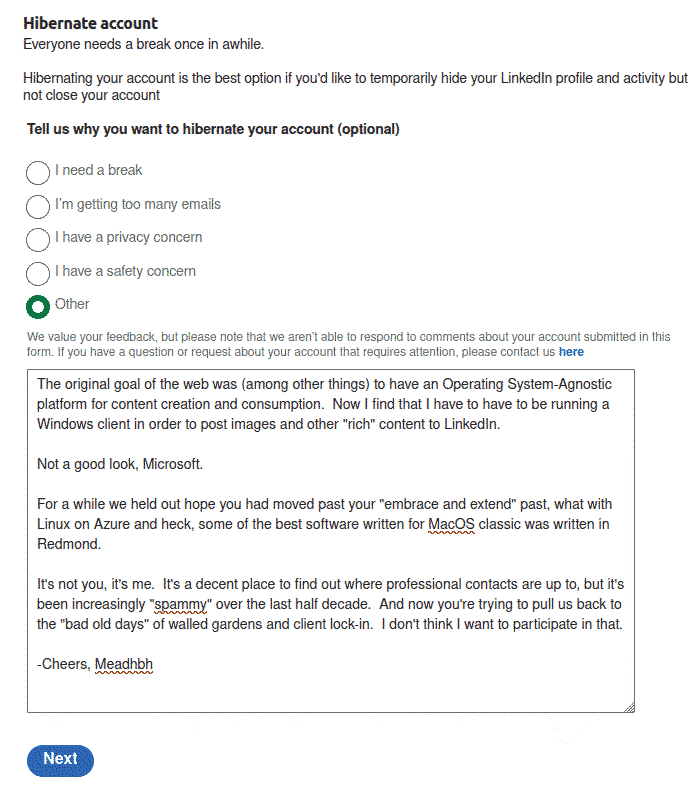

After nearly two decades of using LinkedIn, I have to move on. It turns out LinkedIn now only supports posting "rich" content (images, etc.) via browsers running on Windows clients. People who remember the "bad old days" of Microsoft will like find this return to Walled Gardents [1] distressing. "The Web" was a delightful accident, but by the time we figured out it's potential, the idea of an OS-Neutral platform for content creation and distribution enabled a constellation of highly regarded web sites and applications.
It's not you, Microsoft. It's me. I've been through this before. I don't want to go through it again.
